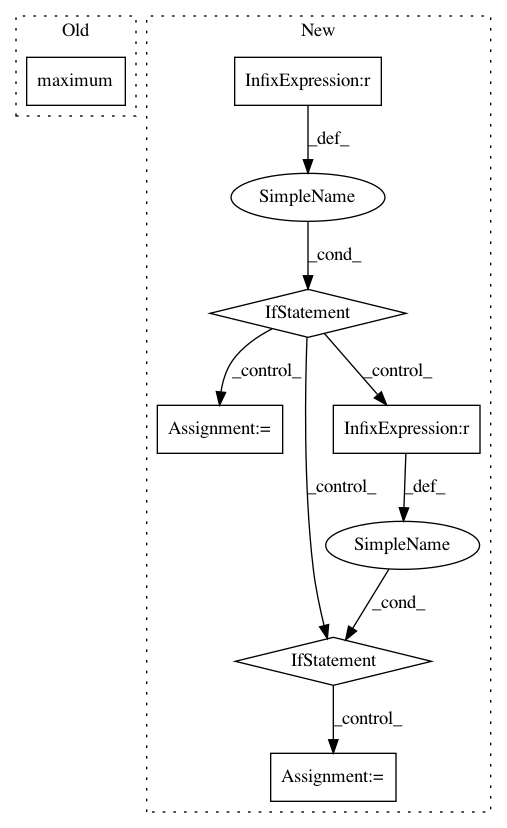

072e5680310c1cefef7e520c16bb20e92da3016d,geomstats/geometry/hypersphere.py,HypersphereMetric,exp,#HypersphereMetric#Any#Any#,342
Before Change
// TODO(nina): Raise error when vector is not tangent
n_base_points, extrinsic_dim = base_point.shape
n_tangent_vecs, _ = tangent_vec.shape
n_exps = gs.cast(gs.maximum(n_base_points, n_tangent_vecs), gs.int32)
hypersphere = Hypersphere(dimension=extrinsic_dim-1)
proj_tangent_vec = hypersphere.projection_to_tangent_space(
After Change
norm_tangent_vec[mask_non0]
n_coef_1 = n_tangent_vecs
if n_coef_1 != n_base_points:
if n_coef_1 == 1:
coef_1 = gs.squeeze(coef_1, axis=0)
einsum_str = "i,nj->nj"
elif n_base_points == 1:
base_point = gs.squeeze(base_point, axis=0)
einsum_str = "ni,j->nj"
else:
raise ValueError("Shape mismatch in einsum.")
exp = (gs.einsum(einsum_str, coef_1, base_point)
+ gs.einsum("ni,nj->nj", coef_2, proj_tangent_vec))
return exp
In pattern: SUPERPATTERN
Frequency: 3
Non-data size: 7
Instances
Project Name: geomstats/geomstats
Commit Name: 072e5680310c1cefef7e520c16bb20e92da3016d
Time: 2020-01-17
Author: ninamio78@gmail.com
File Name: geomstats/geometry/hypersphere.py
Class Name: HypersphereMetric
Method Name: exp
Project Name: geomstats/geomstats
Commit Name: c86fbbe0c0bca22391d46177c8850d71c33b2e1d
Time: 2020-01-17
Author: ninamio78@gmail.com
File Name: geomstats/geometry/riemannian_metric.py
Class Name: RiemannianMetric
Method Name: inner_product
Project Name: nipy/dipy
Commit Name: a731dbfb00e17f59b55d0b36a14f69c65e9a849a
Time: 2012-04-05
Author: Bago.Amirbekian@ucsf.edu
File Name: dipy/reconst/shm.py
Class Name:
Method Name: normalize_data